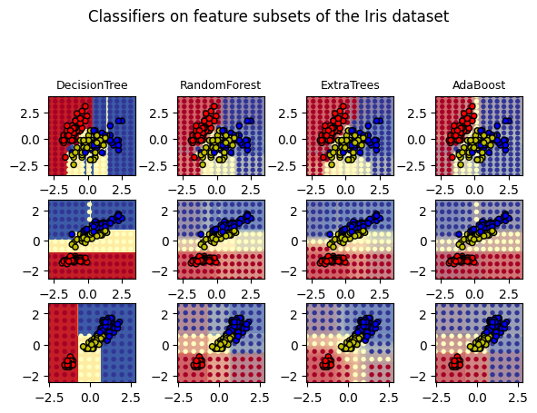

from sklearn.datasets import load_iris
iris = load_iris()Random Forest Classification
Load the dataset iris
Declare X, y
X: independent variables, the features/attributes used for classification prediction y: dependent variables, the feature/attribute/target used for training and testing
X = iris.data
y = iris.targetPrepare stages
training and testing dataset are splited with test_size as ratio. Here we use 80% for training and 20% for testing
from sklearn.model_selection import train_test_split
X_train, X_test, y_train, y_test = train_test_split(X, y, test_size=0.20)Train your model
from sklearn.ensemble import RandomForestClassifier
classifier = RandomForestClassifier(n_estimators=10)
classifier.fit(X_train, y_train)RandomForestClassifier(n_estimators=10)In a Jupyter environment, please rerun this cell to show the HTML representation or trust the notebook.
On GitHub, the HTML representation is unable to render, please try loading this page with nbviewer.org.
RandomForestClassifier(n_estimators=10)
Evaluate your model
y_pred = classifier.predict(X_test)from sklearn.metrics import classification_report, confusion_matrix
print(confusion_matrix(y_test, y_pred))
print(classification_report(y_test, y_pred))[[11 0 0]
[ 0 9 0]
[ 0 1 9]]
precision recall f1-score support
0 1.00 1.00 1.00 11
1 0.90 1.00 0.95 9
2 1.00 0.90 0.95 10
accuracy 0.97 30
macro avg 0.97 0.97 0.96 30
weighted avg 0.97 0.97 0.97 30
Tune the model
Compare decision tree, random forest, extra tree, and adaboost.
import numpy as np
import matplotlib.pyplot as plt
from matplotlib.colors import ListedColormap
from sklearn.datasets import load_iris
from sklearn.ensemble import (
RandomForestClassifier,
ExtraTreesClassifier,
AdaBoostClassifier,
)
from sklearn.tree import DecisionTreeClassifier
# Parameters
n_classes = 3
n_estimators = 30
cmap = plt.cm.RdYlBu
plot_step = 0.02 # fine step width for decision surface contours
plot_step_coarser = 0.5 # step widths for coarse classifier guesses
RANDOM_SEED = 13 # fix the seed on each iteration
# Load data
iris = load_iris()
plot_idx = 1
models = [
DecisionTreeClassifier(max_depth=None),
RandomForestClassifier(n_estimators=n_estimators),
ExtraTreesClassifier(n_estimators=n_estimators),
AdaBoostClassifier(DecisionTreeClassifier(max_depth=3), n_estimators=n_estimators),
]
for pair in ([0, 1], [0, 2], [2, 3]):
for model in models:
# We only take the two corresponding features
X = iris.data[:, pair]
y = iris.target
# Shuffle
idx = np.arange(X.shape[0])
np.random.seed(RANDOM_SEED)
np.random.shuffle(idx)
X = X[idx]
y = y[idx]
# Standardize
mean = X.mean(axis=0)
std = X.std(axis=0)
X = (X - mean) / std
# Train
model.fit(X, y)
scores = model.score(X, y)
# Create a title for each column and the console by using str() and
# slicing away useless parts of the string
model_title = str(type(model)).split(".")[-1][:-2][: -len("Classifier")]
model_details = model_title
if hasattr(model, "estimators_"):
model_details += " with {} estimators".format(len(model.estimators_))
print(model_details + " with features", pair, "has a score of", scores)
plt.subplot(3, 4, plot_idx)
if plot_idx <= len(models):
# Add a title at the top of each column
plt.title(model_title, fontsize=9)
# Now plot the decision boundary using a fine mesh as input to a
# filled contour plot
x_min, x_max = X[:, 0].min() - 1, X[:, 0].max() + 1
y_min, y_max = X[:, 1].min() - 1, X[:, 1].max() + 1
xx, yy = np.meshgrid(
np.arange(x_min, x_max, plot_step), np.arange(y_min, y_max, plot_step)
)
# Plot either a single DecisionTreeClassifier or alpha blend the
# decision surfaces of the ensemble of classifiers
if isinstance(model, DecisionTreeClassifier):
Z = model.predict(np.c_[xx.ravel(), yy.ravel()])
Z = Z.reshape(xx.shape)
cs = plt.contourf(xx, yy, Z, cmap=cmap)
else:
# Choose alpha blend level with respect to the number
# of estimators
# that are in use (noting that AdaBoost can use fewer estimators
# than its maximum if it achieves a good enough fit early on)
estimator_alpha = 1.0 / len(model.estimators_)
for tree in model.estimators_:
Z = tree.predict(np.c_[xx.ravel(), yy.ravel()])
Z = Z.reshape(xx.shape)
cs = plt.contourf(xx, yy, Z, alpha=estimator_alpha, cmap=cmap)
# Build a coarser grid to plot a set of ensemble classifications
# to show how these are different to what we see in the decision
# surfaces. These points are regularly space and do not have a
# black outline
xx_coarser, yy_coarser = np.meshgrid(
np.arange(x_min, x_max, plot_step_coarser),
np.arange(y_min, y_max, plot_step_coarser),
)
Z_points_coarser = model.predict(
np.c_[xx_coarser.ravel(), yy_coarser.ravel()]
).reshape(xx_coarser.shape)
cs_points = plt.scatter(
xx_coarser,
yy_coarser,
s=15,
c=Z_points_coarser,
cmap=cmap,
edgecolors="none",
)
# Plot the training points, these are clustered together and have a
# black outline
plt.scatter(
X[:, 0],
X[:, 1],
c=y,
cmap=ListedColormap(["r", "y", "b"]),
edgecolor="k",
s=20,
)
plot_idx += 1 # move on to the next plot in sequence
plt.suptitle("Classifiers on feature subsets of the Iris dataset", fontsize=12)
plt.axis("tight")
plt.tight_layout(h_pad=0.2, w_pad=0.2, pad=2.5)
plt.show()DecisionTree with features [0, 1] has a score of 0.9266666666666666
RandomForest with 30 estimators with features [0, 1] has a score of 0.9266666666666666
ExtraTrees with 30 estimators with features [0, 1] has a score of 0.9266666666666666
AdaBoost with 30 estimators with features [0, 1] has a score of 0.8533333333333334
DecisionTree with features [0, 2] has a score of 0.9933333333333333
RandomForest with 30 estimators with features [0, 2] has a score of 0.9933333333333333
ExtraTrees with 30 estimators with features [0, 2] has a score of 0.9933333333333333
AdaBoost with 30 estimators with features [0, 2] has a score of 0.9933333333333333
DecisionTree with features [2, 3] has a score of 0.9933333333333333
RandomForest with 30 estimators with features [2, 3] has a score of 0.9933333333333333
ExtraTrees with 30 estimators with features [2, 3] has a score of 0.9933333333333333
AdaBoost with 30 estimators with features [2, 3] has a score of 0.9933333333333333
Credit
- https://scikit-learn.org/stable/auto_examples/ensemble/plot_forest_iris.html#sphx-glr-auto-examples-ensemble-plot-forest-iris-py
![Created in deepnote.com]() Created in
Created in